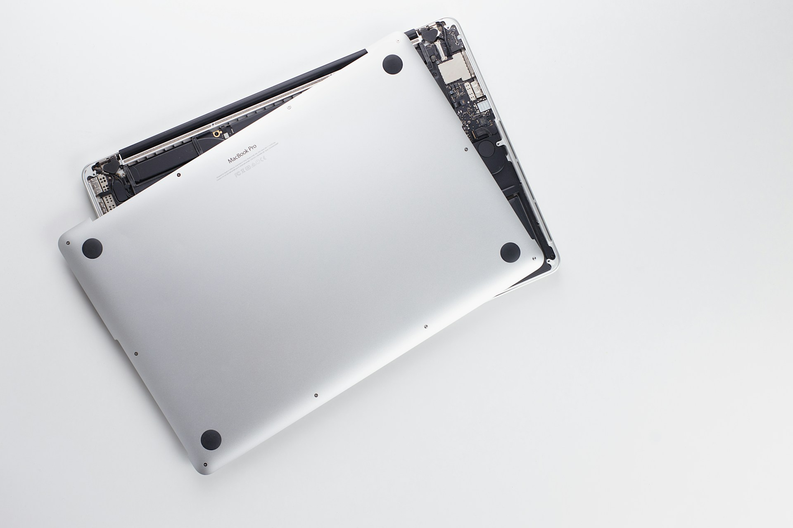

Welcome to the Campaign
Bridging the Digital Divide Through Technology
Technology has become essential for education, employment, entrepreneurship, healthcare, and communication. Yet millions of people across underserved communities remain excluded simply because they do not have access to a digital device.
At the same time, thousands of laptops, tablets, and desktop computers remain unused in homes, schools, businesses, and government offices. Many of these devices still have the potential to change lives.
The Donate a Device – Change a Future campaign connects these two realities by collecting, refurbishing, and redistributing technology to learners, educators, innovators, and communities where it can create lasting educational, economic, and social impact.
Learn More About the CampaignOur Impact
Creating Opportunities Through Technology
Every donated device represents new possibilities for learning, innovation, employment, and community development.
Our Purpose
Building a More Inclusive Digital Future
We believe technology should create opportunities for everyone, regardless of background, income, gender, or ability.
Our Vision
We envision a future where every learner, teacher, and aspiring innovator has access to the digital tools needed to learn, create, communicate, and thrive.
Technology should serve as a bridge to opportunity, empowering individuals and communities to participate fully in an increasingly digital world.
Our Mission
We bridge the digital divide by collecting, refurbishing, and redistributing digital devices to underserved communities while promoting digital literacy, online safety, and lifelong learning.
Through partnerships with individuals, businesses, schools, development organizations, and government institutions, we turn unused technology into lasting educational and social impact.
Why This Campaign Matters
Closing the Digital Gap, One Device at a Time
Digital access is no longer a luxury. It is essential for education, employment, innovation, entrepreneurship, and active participation in today's world.
Expanding Opportunities
Many talented students, teachers, women, young innovators, and persons with disabilities remain excluded from digital opportunities because they lack access to a computer. This limits learning, employment, entrepreneurship, and innovation.
Creating Sustainable Impact
Thousands of functional devices are replaced every year. By refurbishing and redistributing them, we extend their lifespan, reduce electronic waste, and provide technology where it can create the greatest impact.
How It Works
Every Donation Follows a Transparent Journey
Every donated device passes through a structured process to ensure it reaches someone who will benefit from it the most.
Donate
Individuals, businesses, schools, and organizations donate used, unused, or faulty laptops, tablets, desktop computers, and digital accessories.
Assess
Every donated device is carefully inspected to determine its condition and identify any repairs or upgrades required.
Refurbish
Devices undergo secure data wiping, repairs, software installation, quality testing, and preparation for educational use.
Match
Working with schools, communities, and partners, we identify deserving beneficiaries based on need, commitment, and potential impact.
Empower
Devices are distributed alongside digital literacy and online safety support, helping beneficiaries confidently use technology.
Measure
We monitor every donation, document success stories, and share campaign updates that demonstrate the real impact of each contribution.
Who Benefits
Empowering People Through Digital Access
Our campaign supports individuals and institutions that can create lasting change through access to technology.
Teachers & Educators
Helping teachers create engaging lessons, access digital resources, and improve learning outcomes in their classrooms.
Students & Youth
Providing young people with the tools they need to learn, research, innovate, and prepare for future careers.
Women & Girls
Supporting women and girls in gaining digital skills, accessing education, and creating sustainable livelihoods.
Persons with Disabilities
Expanding access to inclusive technology that promotes communication, learning, independence, and employment.
Schools & Learning Centres
Strengthening educational institutions by providing shared digital resources that improve teaching and learning.
Communities
Supporting community development by expanding digital inclusion, strengthening local learning centres, and creating opportunities for lifelong learning.

Why Donate?
Your Old Device Can Create a New Beginning
Your laptop may no longer meet your needs, but it could become someone's first computer. One donated device can help a teacher prepare lessons, enable a student to continue learning, support a young entrepreneur, or provide greater digital access for a person with a disability.
Every donation also helps reduce electronic waste, conserve valuable resources, and promote a more sustainable future through responsible technology reuse.
Donate a DeviceAccountability
Our Commitment to Transparency
Trust is at the heart of everything we do.
Every donated device is documented, assessed, securely wiped, refurbished where possible, and distributed through a transparent beneficiary selection process.
We monitor every distribution, measure outcomes, and share impact stories so donors and partners can see how their support is changing lives across communities.
Join the Movement
Together We Can Build a More Connected Tomorrow
Creating a digitally inclusive future requires collaboration from individuals, businesses, schools, development organizations, and government institutions.
Donate
Give unused digital devices a second life and create opportunities for learners and communities.
Partner
Work with Zee Tech Foundation to expand our reach and increase our collective impact.
Volunteer
Share your technical skills, professional expertise, or time to help refurbish devices and support our programs.
Support
Sponsor refurbishment, logistics, digital literacy programs, and outreach initiatives across Nigeria.